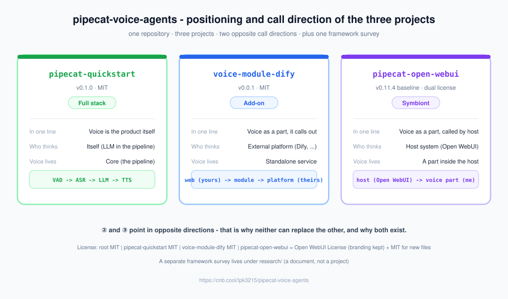

One repository, three voice projects — answering three different questions.
The same real-time voice capability, built three times under three different host relationships:
you own it, it calls out to a platform, and it is called by a host.
They live together for comparison and study — not to become a single product.
VAD / ASR / LLM / TTS in a single pipeline, with tools, memory, a knowledge base and orchestration all in your hands. You own everything and depend on exactly one LLM key.
② Add-on
voice-module-dify
Voice as a part, calling out to a platform.
It only listens and speaks; thinking is delegated to an external platform (Dify in the default case). The module is the caller, the platform is the callee — switching platforms means editing two .env lines.
③ Symbiont
pipecat-open-webui
Voice as a part, called by a host.
A fork of Open WebUI: the host system is the owner and voice is a pluggable component inside it, wired through the host's own slots.
The difference comes down to two questions
Who thinks?Where does the voice layer live? — all three build "voice"; everything else follows
from those two answers, including the resulting call direction.
Why all three exist: ② and ③ point in opposite directions (②: me → platform; ③: host → me).
Merging them would force one of them to change direction and lose its identity — which is exactly why neither
can replace the other.
How this differs from similar projects: these are not "yet another voice demo". The genuinely hard
parts of voice — end-of-turn detection, interruption, speaking while still receiving, filling the silence
while the platform is slow, and detecting false claims of execution — are treated as first-class engineering
problems, and every conclusion ships with a re-runnable probe or unit test.
Architecture
Positioning and call direction of the three projects. The diagram is the same asset the
READMEs use — one file, one source of truth.

Data flow: three shapes
① browser ⇄ pipeline (VAD → ASR → LLM → TTS) ⇄ browser — a self-contained loop.
Trust guardrail: detects and forcibly corrects "false claims of execution"
How to run
bash
cd pipecat-quickstart/server
uv sync --extra sensevoice
cp .env.example .env # only MODELSCOPE_API_KEY is required
uv run bot.py # http://localhost:7860/client
Connects voice conversation to an already existing agent system
Handles the hard parts of voice: end-of-turn detection, interruption, speaking while receiving, filling silence while the platform is slow
Shows live on the page: thinking / tool calls / tool results / flow nodes / per-turn latency
Two entry points: WebSocket (passes any HTTP port forwarding) + SmallWebRTC
4 probes + 33 unit tests; conclusions are quantified
How to run (with a stand-in, no real platform)
bash
cd voice-module-dify
uv sync
cp .env.example .env # BRAIN_STUB=1 uses a local stand-in as the brain
uv run python probe/verify_brain.py
uv run python probe/verify_speech_legs.py
To use your own platform, edit two .env lines (BRAIN_BASE_URL / BRAIN_API_KEY); if your platform does not meet the contract, only server/agent_client.py changes.
What it does
Adds voice input/output to an existing agent system through the host's native slots
STT = local faster-whisper; TTS = browser speechSynthesis
UI and orchestration only — no model inference, so a plain CPU server is enough
This branch's own documentation all lives in voice-docs/, separate from upstream docs/
voice-module-dify/ 📘 voice module calling a platform (MIT)
server/ the module itself (app.py / brain.py / agent_client.py)
agent/ platform side: app definition, import script, web client
probe/ 4 re-runnable probes
tests/ 33 fast unit tests
docs/ mental model / porting / phase handbook
pipecat-open-webui/ 📙 voice part called by a host (dual license)
backend/ FastAPI backend
src/ SvelteKit frontend
voice-docs/ this branch's own docs (separate from upstream docs/)
FAQ.md FAQ (including Q14: speech recognised as a foreign language)
LICENSE-SUPPLEMENT.md dual-license scope
Quick start
The three projects are independent — pick one and start there.
bash · 1 API key
git clone https://github.com/LPK3215/pipecat-voice-agents.git
cd pipecat-voice-agents/pipecat-quickstart/server
uv sync --extra sensevoice # deps for the default Chinese STT (SenseVoice)
cp .env.example .env # only MODELSCOPE_API_KEY is required
uv run ../scripts/prewarm.py # recommended: warm up the local models first
uv run bot.py # open http://localhost:7860/client
bash · running in 30 seconds (local stand-in)
cd pipecat-voice-agents/voice-module-dify
uv sync
cp .env.example .env # set BRAIN_STUB to 1 (local stand-in as the brain)
uv run python probe/verify_brain.py # verify the "brain" interface
uv run python probe/verify_speech_legs.py # verify it can really speak and listen
bash · source mode
cd pipecat-voice-agents/pipecat-open-webui
# 1) backend dependencies
cd backend && uv venv .venv --python 3.12 \
&& uv pip install --python .venv/bin/python -r requirements-slim.txt && cd ..
# 2) frontend dependencies + build
NODE_OPTIONS="--max-old-space-size=10240" npm ci
NODE_OPTIONS="--max-old-space-size=10240" npm run build
# 3) start (PORT must be in the shell environment)
cd backend && USE_SLIM_DOCKER=true \
FRONTEND_BUILD_DIR=/workspace/pipecat-open-webui/build PORT=8000 \
PATH="$PWD/.venv/bin:$PATH" ./start.sh
Benchmarks
All values are measured numbers recorded in the projects' own documentation; they are only
meaningful for comparisons within the same project.
0ms
① end-to-end "bot starts speaking"(audio probe · baseline = user finished speaking)
0%
① SenseVoice Chinese character error rate(default STT engine)
0ms
① Piper first audio chunk(local TTS)
0ms
② request sent → platform first token(self-hosted Dify 1.17.1)
Stage
Latency (ms)
user transcript (transcript received)
934
LLM started (LLM begins generating)
935
first answer token
1424
TTS started (synthesis begins)
1527
bot speaking (bot starts speaking)
1721
Baseline: client-side timing from the moment the user finished speaking (2026-10-01, SenseVoice). The test audio is Piper-synthesised, so real microphone input is usually better.
Engine
Char. error rate
Fully correct
Per sentence
Whisper base (original setup)
23.8%
1/6
607 ms
Whisper small
13.6%
2/6
874 ms
SenseVoice (current default)
10.2%
3/6
158 ms
TTS is a genuine trade-off instead: Piper first chunk 76 ms (mechanical) vs Kokoro 709 ms (more natural). A voice assistant is sensitive to how fast it starts speaking, so Piper is the default.
Metric
Old default (300/0, cosine only)
Shipped config (500/50 + lexical rerank α=0.3)
hit@1
33%
53%
hit@3
40%
80%
MRR
0.41
0.69
The corpus is this repository's own documentation, so absolute values drift as docs are added — only comparisons within a single run are meaningful (scripts/kb_eval.py re-runs it).
Metric
Value
request sent → platform first token
1334 ms
platform first token → first sentence → handed to TTS
+12 ms
platform's own first-token latency (voice layer bypassed)
740–963 ms
end-to-end audio round-trip
✅ 318,720 bytes / 10.0 s of audio
Measured against self-hosted Dify 1.17.1 with a ModelScope model (2026-10-05).
Testing and quality
① 113 unit tests (fast, offline, no model loading) plus 13 self-check / probe scripts
② 33 unit tests plus 4 re-runnable probes (assembly / brain interface / speak and listen / end-to-end audio)
① includes an "architecture guard" test: if business rows reappear in source code, the test goes red
③ measured, not assumed: LLM chat and voice I/O both verified end to end
Three pitfalls worth knowing
Latency numbers are not directly comparable — baselines differ ("user finished speaking" vs "audio streaming ended"), the latter being roughly 0.5 s more optimistic.
Read the retraction notice before quoting the stress report — one conclusion in TOOL_TESTS.md was overturned; the text is kept with the reason.
No explicit language means auto-detection — in practice Chinese was misidentified as Thai; both projects now pin zh, so do not delete those lines.
Read the CONTRIBUTING.md of the project you are changing (the root file only covers what is common).
If you change code, also run that project's tests and probes and paste the measured output into the PR.
Use the type: summary commit form (feat / fix / docs / refactor / test / style / chore).
Documentation discipline
Write the detailed version of anything in exactly one place; link everywhere else, so multiple sources cannot drift apart.
Root documentation takes the repository view and does not restate implementation details owned by the projects.
Documentation layer: two README versions (English primary + README.zh-CN.md); other root docs are English-only. Asset layer: one copy, always English, no language suffix.
License
Scope
License
Notes
Repository-owned files
MIT
this README, CONTRIBUTING, the framework survey, …
① pipecat-quickstart/
MIT
the upstream scaffold portion keeps its BSD 2-Clause notice
② voice-module-dify/
MIT
original work
③ pipecat-open-webui/
Open WebUI License + MIT
upstream code stays under the Open WebUI License (branding clause); files newly added on this branch are MIT
It cannot be released under MIT as a whole
The root LICENSE (MIT) does not coverpipecat-open-webui/; each subdirectory is
governed by its own LICENSE. In particular, the "Open WebUI" branding must not be altered,
removed, obscured or replaced.